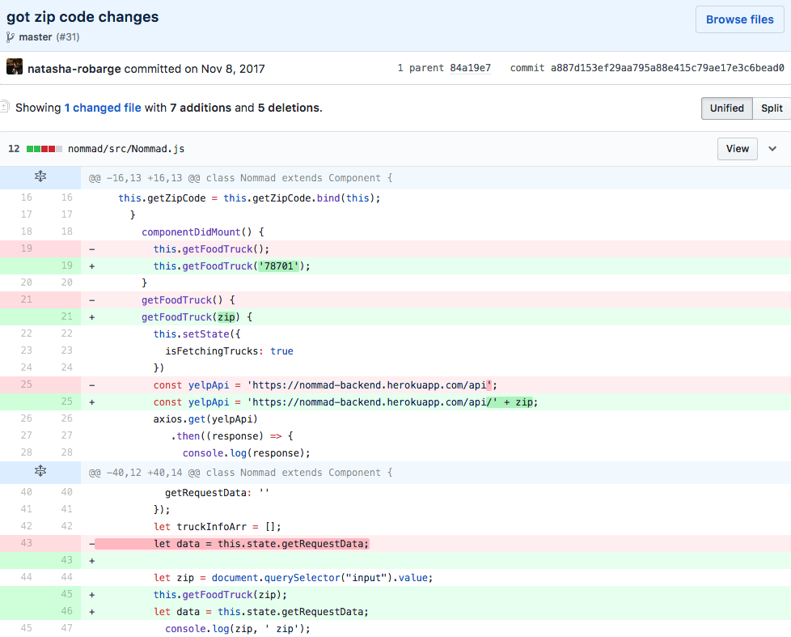

Nommad
Check out the code here

Nommad is our solution to finding food trucks near you. Nommad shows you all food trucks within a 10 mile radius of the zip code you enter. You can even find food trucks in different countries! By using the Yelp API, we bring you a user friendly design that makes getting good food less of a hassle. Click here to find food trucks.
This was my second group project at General Assembly. I wasn't very hyped about our project, but it still came out well in the end. I tried working with the front end for this project, but near the end of the project, I realized that designing really wasn't my strong suit so I ended up helping out a bit with the functionality which was similar to the functionality I did with our first group projects.

The obstacle I encountered with this project was figuring out how to display food trucks from the API based on the zip code that was entered. I did this once before for the first project, but we had learned so much that I forgot what steps I encountered before. Eventually, I figured out that I should probably filter it based on whether or not the zip codes from the API data matched the zip code that was entered and then display them if they were the same. What I wish I would have done with this is write everything out in pseudocode before going straight into coding.
